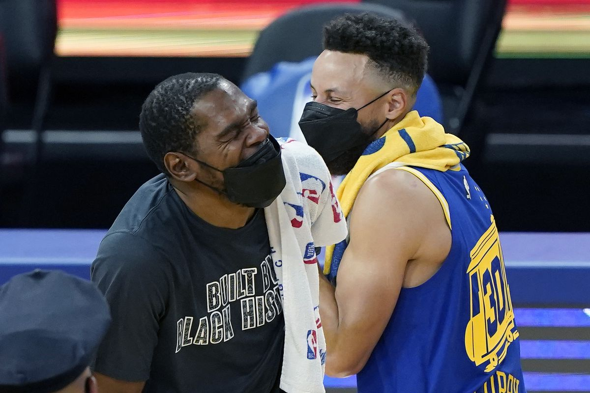

Golden State Warriors es el equipo del momento: dominó a Brooklyn Nets con un Steph Curry fantástico
Golden State ganó por 117-109 en la casa de los Nets, siendo ampliamente superior desde el final del segundo cuarto y con un Curry implacable que anotó nueve triples en 14 intentos para terminar con 37 puntos. Los Warriors siguen en la cima de la liga tras un mes de Fase Regular.
Se esperaba un duelo de dientes apretados entre Golden State Warriors y Brooklyn Nets y así fue, pero el impresionante nivel de los de San Francisco le terminó sacando todo atisbo de intensidad al partido. Golden State ganó por 117-99 como visitante, aseverando que su gran inicio de temporada va en serio.
Hace un año Golden State iniciaba la 2020-2021 perdiendo por 26 puntos de diferencia en Brooklyn: ahora, repitiendo a dos jugadores titulares y a cuatro hombres más de aquel partido, llegó a sacar 28 tantos de ventaja. Comenzaron yendo de atrás porque no podían detener a Kevin Durant ni a otros jugadores de los Nets que cortaban hacia el aro como Brown, pero una vez que sacaron de partido a KD los Warriors se encargaron de brillar. Encestaron el 51% de sus tiros de campo, recogieron 15 rebotes más que sus rivales y tuvieron a un Steph Curry iluminado de 37 puntos que empieza a aparecer como el candidato inicial para el MVP.
Con unos Warriors de récord 12-2 en la cima de la liga es difícil no postular a Curry como el mejor. Steph esta noche, por tercera vez en 14 partidos que jugó en la temporada, encestó nueve triples. Y hoy lo hizo en solo 14 intentos desde el perímetro, una marca que apenas había conseguido una vez en los últimos dos años y medio (9-14 en triples en enero de 2021 ante LA Clippers). Además agregó 7 rebotes, 5 asistencias y 2 robos.
Andrew Wiggins fue su ladero principal, con 19 puntos que más que nada se cosecharon en ese momento clave del segundo cuarto (13 puntos en los últimos minutos de ese período), pero hubo muchos jugadores destacados en Golden State. Draymond Green con 11 puntos, 8 asistencias y 6 rebotes, el esfuerzo del banco con Otto Porter, Jonathan Kuminga (7 puntos y 6 rebotes para el rookie) Andre Iguodala, Damion Lee y Gary Payton Jr... Juan Toscano-Anderson fue el más relegado de la rotación, disputando apenas 5 minutos (casi todo en el final) en los que perdió dos balones y recogió un rebote.
James Harden a su vez sumó para su cuenta con tiros libres (10-11) pero no pudo abastecer tanto a los demás: 24 puntos, 5 rebotes y 5 asistencias, poco más de la mitad de su promedio de asistencias. La opción Aldridge (2 puntos en 9 minutos cuando promedia 12 por encuentro) solo fue usada cuando el partido ya parecía fuera de alcance en el tercer cuarto y Patty Mills, titular en lugar de Harris, empezó fuerte con un triple en la primera posesión pero luego tuvo un partido tímido, de 8 tantos con 3-8 de campo.
Primer cuarto
Comienzo destructivo de parte de los Nets: ganan por 13-7 después de tres minutos y medio de juego con 5-5 en tiros de campo y puntos de todos los jugadores a excepción de Harden. Durant ya convirtió dos veces en la media distancia y Brown suma acercándose al aro. Mills y Curry pusieron el primer triple de cada equipo.
Curry es la clave de la primera reacción de los Warriors: le robó dos balones a Harden y también encestó otro triple más. Golden State recortó la diferencia a un tanto, pero Harden la estiró a 17-14. Tiempo muerto pedido desde el lado de Brooklyn cuando Kevon Looney ya carga con dos faltas.
¯\_(ツ)_/¯
— Golden State Warriors (@warriors) November 17, 2021
📺 @NBAonTNT pic.twitter.com/Spb27I8dz5
A una diferencia máxima de 9 puntos llegó la ventaja de Brooklyn (25-16) con triples de Durant y Brown, pero Golden State empezó a conseguir puntos de ataque rápido con Gary Payton, su gran aparición de este mes, y se puso 25-22. Los Nets han permitido varias canastas tras pérdidas. Luego, cuando el equipo local se escapó de nuevo (30-22), Curry revivió a los Warriors con dos triples para llegar a 12 tantos en el partido y poner a Golden State de nuevo a una posesión de distancia.
Steph shimmying on the Nets after back-to-back threes 💦 pic.twitter.com/35P9Me3sMU
— Bleacher Report (@BleacherReport) November 17, 2021
El primer período terminó con ventaja de 34-31 para los Nets, liderados por 12 puntos de Durant, 8 de Harden y 7 de un Brown que de momento es el factor X. Curry y Payton son de lo mejor de los Warriors, que al final de nuevo achicaron distancia con un doble del rookie Jonathan Kuminga. Estadísticas muy parejas entre ambos equipos de momento.
Segundo cuarto
Momento de imprecisiones de ambos a la hora de comenzar el segundo período: tras casi tres minutos de juego solamente sumó dos puntos cada uno y la distancia en el marcador es la misma. Kuminga llama la atención por aparecer por todos lados en los Warriors, para bien y para mal, pero lleno de energía. Llama la atención que los Nets no le den minutos a Aldridge aun: solo ingresaron Johnson, Carter y Bembry desde el banco.
Otto Porter se transformó en un camino para los Warriors: usando su cuerpo para llegar hasta la canasta empujó un parcial de 11-4 de parte de los visitantes que ahora ganan por 43-40 y están al frente por primera vez en la noche. Los Nets aún no han conseguido algo de Durant en este cuarto y Harden está siendo bastante frenado por la defensa del equipo de Steve Kerr. Además, Harden se acaba de ir al banco con tres faltas, mismo número al que ya llegaron Poole y Kuminga.
Curry putting the clamps on Harden 🔒 pic.twitter.com/b9Q7GNRcyl
— NBA on TNT (@NBAonTNT) November 17, 2021
Ventaja de cinco había sacado el banco de los Warriors, del que Kerr está haciendo mucho uso esta noche, pero un doble más de un Bruce Brown que ya es el máximo anotador de Brooklyn (14 puntos con 6-7 de campo) y un triple de Mills a la carrera empataron el partido en 50.
¡Qué aparición de Andrew Wiggins en el partido! 13 puntos en los seis minutos finales del segundo cuarto para el canadiense, que hasta el momento no había sumado nada y terminó hasta con un triple sobre la bocina. Golden State gana por 63-58 con ese aporte de Wiggins y 19 de Curry mientras que Brooklyn se sostiene en 16 de KD, 14 de Harden y 14 de Brown. No ha habido ni un minuto en cancha para Aldridge, que promedia 12,8 tantos por encuentro en esta campaña. Dominio de los visitantes en los rebotes por el momento: 25-14 en ese apartado.
Andrew Wiggins (13 PTS) beats the halftime buzzer 🚨@warriors 63@BrooklynNets 58
— NBA (@NBA) November 17, 2021
Second half upcoming on TNT! pic.twitter.com/OzR6I8Sz2n
Tercer cuarto
Golden State sigue en racha para abrir la segunda parte: parcial de 8-0 con canastas de Curry y Wiggins y ventaja inicial de 71-58 tras dos minutos de acción en el tercer cuarto. Harden empezó a cargarse al hombro al ataque de los Nets, que no logra terminar de fluir. Si lo hace el de los Warriors que tiene un problema: la cuarta falta de Curry y la de Wiggins envió a ambos al banco. 78-65 para los de San Francisco con siete minutos por jugar en este período.
Beard muscling 😤 pic.twitter.com/RkN3DDdclU
— Brooklyn Nets (@BrooklynNets) November 17, 2021
Ni sin Curry enfrente los Nets pueden acercarse: ahora es Poole el que complica a los de Durant y Harden mientras que el entrenador Nash prueba con los primeros minutos para Aldridge. 84-68 para Golden State a cinco minutos del final.
Los Warriors extienden y extienden su ventaja: terminaron este período ganando por 98-76 con Iguodala y Draymond anulando a Durant (solamente tres puntos para KD en este cuarto, todo desde el tiro libre, 0-8 en tiros de campo). Golden State ha sido dominante en los terceros cuartos durante toda la temporada y no falló hoy: se lo llevó por 35-18
Ultimo cuarto
Los Nets abrieron el último cuarto con dos dobles seguidos y de nuevo terminaron chocando contra una pared de nombre Steph Curry, que les encajó su séptimo y octavo triple del partido y le sirvió un 2+1 al contraataque a Damion Lee para poner a los Warriors arriba por 106-80. Con menos de 10 minutos por jugar, el partido parece definido por marcador parcial y por desarrollo. Exhibición total de Golden State desde el final del segundo cuarto.
Steph is on a mission 🔥 pic.twitter.com/0Ptqvz08Xi
— NBA TV (@NBATV) November 17, 2021
Nash sacó la bandera blanca poniendo a los rookies Kessler Edwards y Day'Ron Sharpe. Enfrente Curry sigue jugando y anotando: llegó a su noveno triple y acumula 37 tantos. 113-85 para Warriors a cinco minutos y medio de terminar.
Los últimos minutos fueron para que los jugadores del fondo del banco se muestren, como Edwards con los dos triples que encestó. Victoria final por 117-99 para los Warriors, su octava victoria en los últimos nueve partidos.